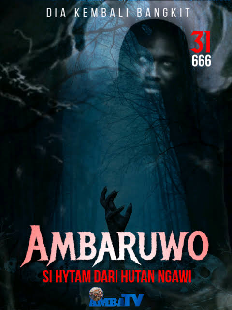
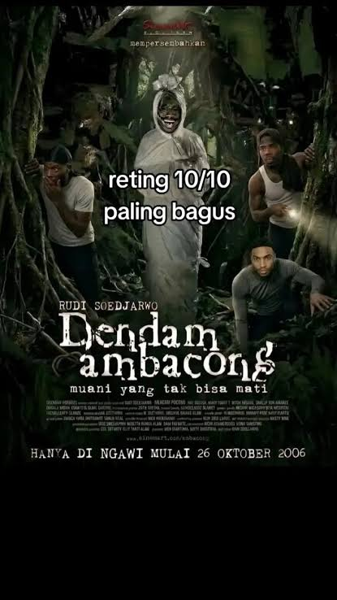

Berikut adalah kumpulan rekomendasi film pilihan lengkap dengan poster, genre, tahun rilis, dan sinopsis singkat sebagai referensi tontonan saat waktu luang.
1. Laut Bercerita
Genre: Drama Politik Era Orde Baru
Tahun: 2026
Mengisahkan perjuangan dan persahabatan sekelompok aktivis mahasiswa pada era Orde Baru serta pencarian keluarga terhadap anggota yang hilang secara misterius.
2. Laskar Pelangi
Genre: Drama Inspiratif
Tahun: 2008
Menceritakan perjuangan sepuluh anak di Belitung dalam memperoleh pendidikan yang layak dan meraih cita-cita di tengah keterbatasan fasilitas sekolah.
3. Keluarga Cemara

Genre: Drama Keluarga
Tahun: 2019
Menceritakan sebuah keluarga yang harus beradaptasi dengan perubahan keadaan ekonomi dari kota ke desa namun tetap saling mendukung satu sama lain.
4. Nussa

Genre: Animasi Keluarga
Tahun: 2021
Mengisahkan kehidupan sehari-hari Nussa, Rarra, dan keluarganya melalui berbagai peristiwa menarik yang sarat akan nilai kebaikan dan keteladanan.